Vídeos de apoio
Reprodução independente, sem sincronização entre os vídeos. A gravação começa depois do login e termina antes das novas credenciais.
Capturas do fluxo

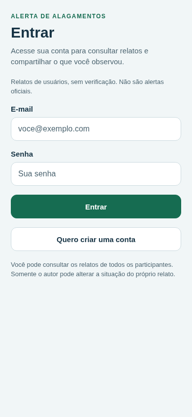
Login

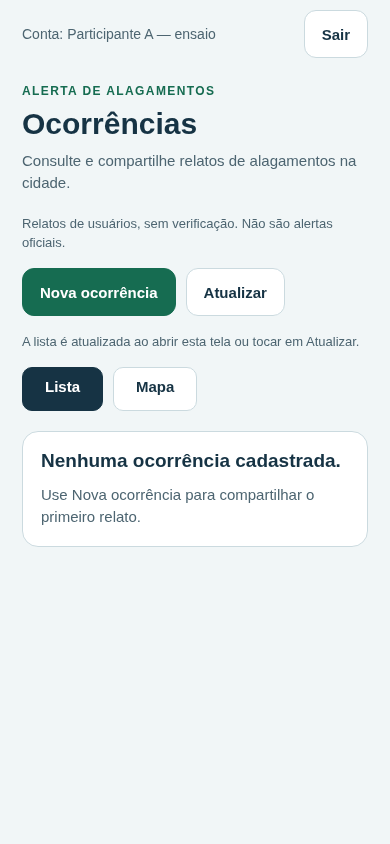
Lista autenticada

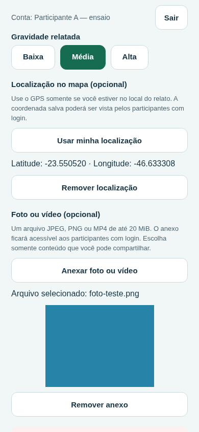
GPS simulado e foto

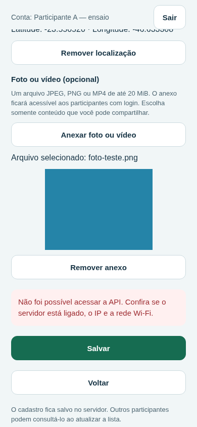
Envio recusado preserva campos

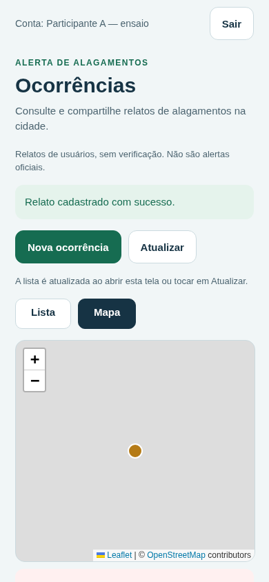
Marcador e fallback do mapa

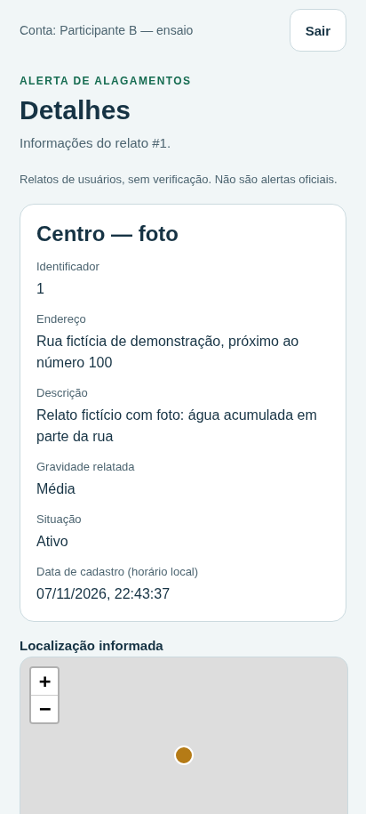
Outra conta somente consulta

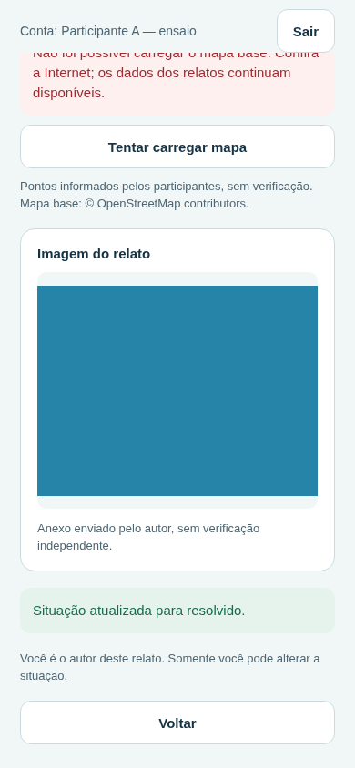
Autor resolve

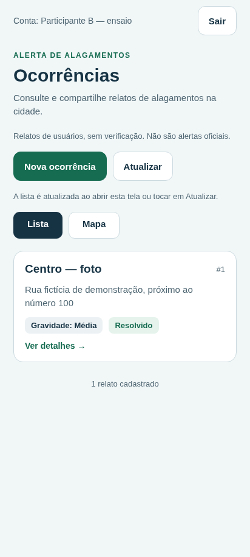
Atualização da lista

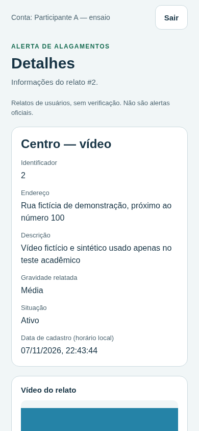
Vídeo MP4 reproduzido

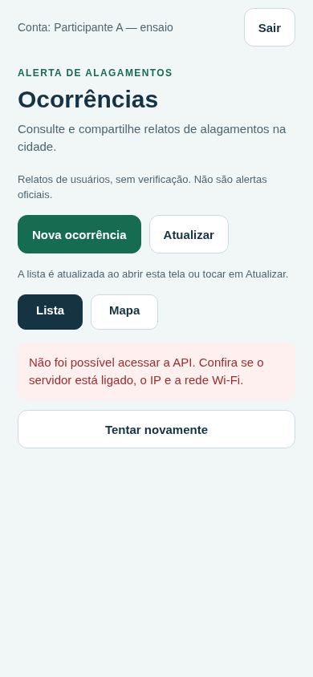
Falha parcial

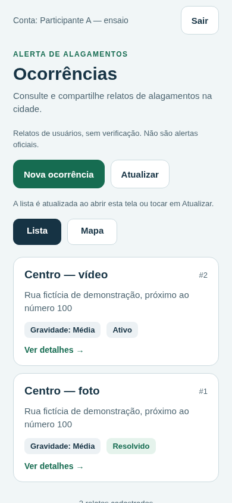
Dados e anexos após reiniciar

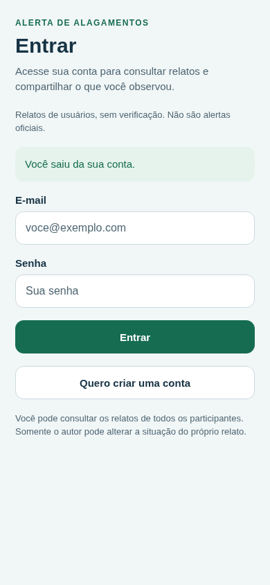
Saída da conta
Verificações executadas
- Acesso sem sessão exige login e API recusa consulta anônima
- Login inválido apresenta mensagem sem conceder acesso
- Cadastro de conta A inicia sessão e consulta lista vazia
- Formulário valida obrigatórios e recebe GPS simulado e foto PNG
- Falha de rede preserva texto, coordenadas e anexo sem criar registro
- Multipart cria um único relato com autoria, GPS e imagem privada
- Mapa renderiza ponto salvo e oferece lista quando tiles são bloqueados no teste
- Conta B consulta imagem autenticada e é impedida de resolver relato de A
- Somente A resolve seu relato e B recebe a alteração após atualizar
- Vídeo MP4 real é enviado, protegido e reproduzido sem exigir GPS
- Sair revoga o token e novo login recupera a conta do autor
- Recarregar a versão web exige novo login sem credencial em armazenamento local
- API desligada mostra erro e mantém a sessão para nova tentativa
- Reiniciar API preserva contas, sessões, situação, GPS e os dois arquivos
- Sessão revogada no servidor retorna à tela de acesso ao receber HTTP 401
Abra a pasta completa para manter vídeos e imagens disponíveis sem Internet. Os anexos de teste são uma imagem e um vídeo sintéticos; não são arquivos de participantes reais.